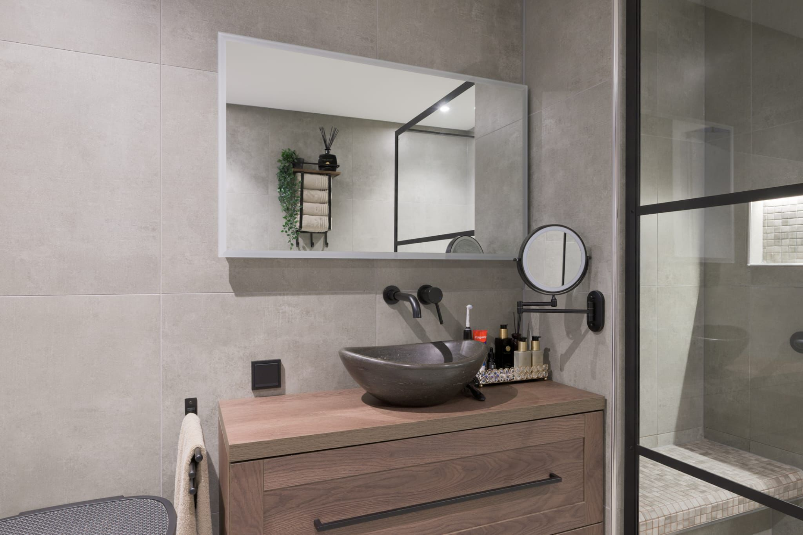
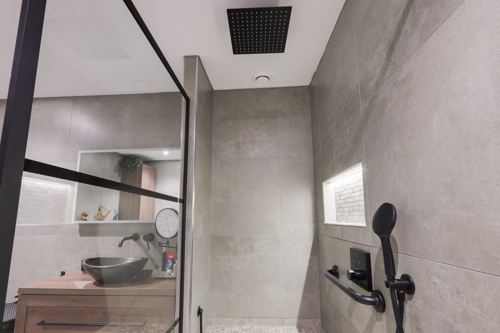
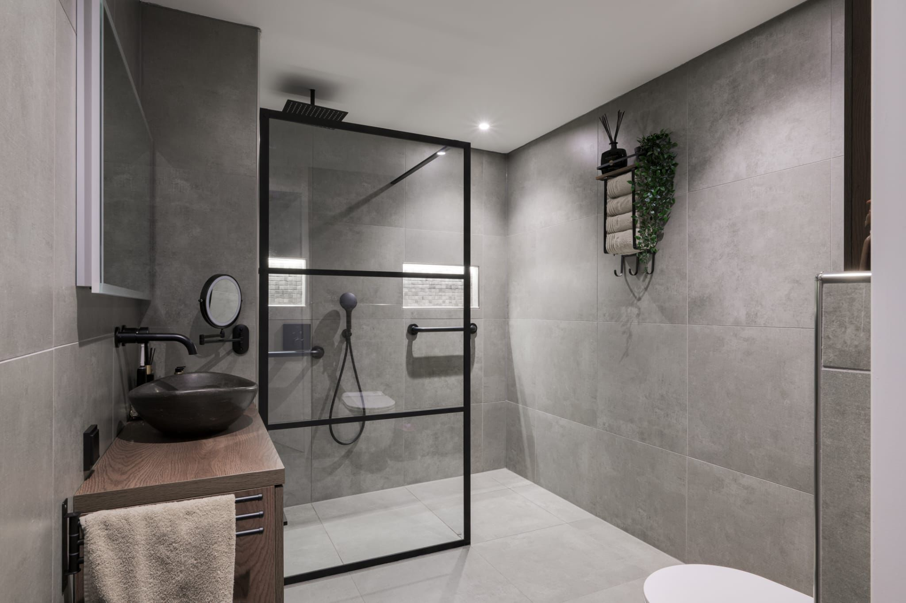
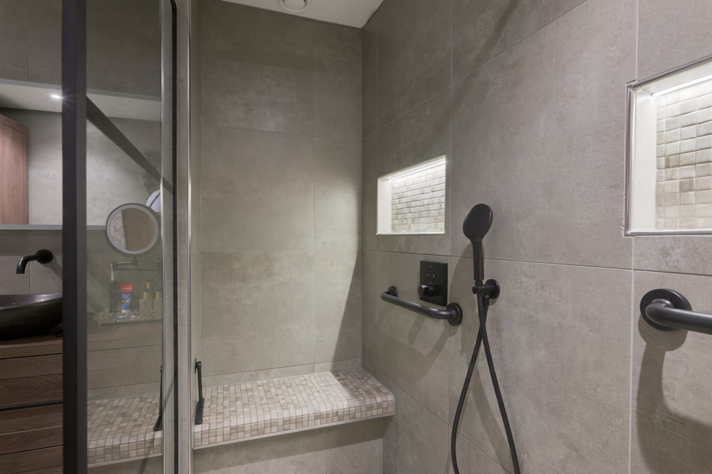
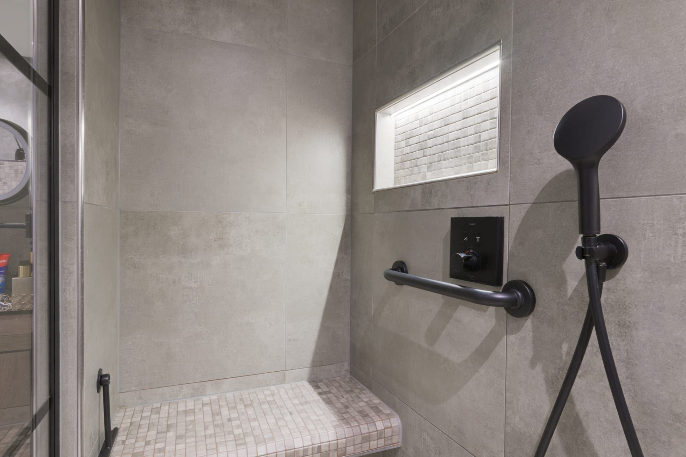

Bano adaptado para movilidad reducida
Reforma integral de un cuarto de bano para adaptarlo a las necesidades de una persona con movilidad reducida. El proyecto incluyó la eliminacion de barreras arquitectonicas, instalacion de suelo antideslizante, barra de apoyo, ducha a nivel de suelo y griferia de manejo sencillo.
Todos los acabados fueron seleccionados con criterios de funcionalidad, durabilidad y estetica para garantizar un espacio digno y practico.
Accessible bathroom renovation
Full refurbishment of a bathroom to meet the needs of a person with reduced mobility. The project included the removal of architectural barriers, installation of non-slip flooring, support rail, level-access shower and easy-to-use taps.
All finishes were selected with functionality, durability and aesthetics in mind to ensure a dignified and practical space.
Barrierefreies Badezimmer
Komplettrenovierung eines Badezimmers für eine Person mit eingeschränkter Mobilität. Das Projekt umfasste die Beseitigung architektonischer Barrieren, Einbau rutschfester Böden, Stützschiene, bodenebene Dusche und leicht bedienbare Armaturen.
Alle Oberflächen wurden nach Kriterien der Funktionalität, Langlebigkeit und Ästhetik ausgewählt.
Salle de bain adaptée PMR
Rénovation complète d'une salle de bain pour répondre aux besoins d'une personne à mobilité réduite. Le projet comprenait la suppression des barrières architecturales, l'installation d'un sol antidérapant, d'une barre d'appui, d'une douche de plain-pied et d'une robinetterie facile à utiliser.
Badkamer aangepast voor mindervalide
Integrale renovatie van een badkamer voor een persoon met beperkte mobiliteit. Het project omvatte het wegnemen van architectonische barrieres, installatie van antislip vloer, steunrail, nuldrempel douche en eenvoudig bedienbare kranen.
Alle afwerkingen werden geselecteerd op functionaliteit, duurzaamheid en esthetiek voor een waardige en praktische ruimte.





